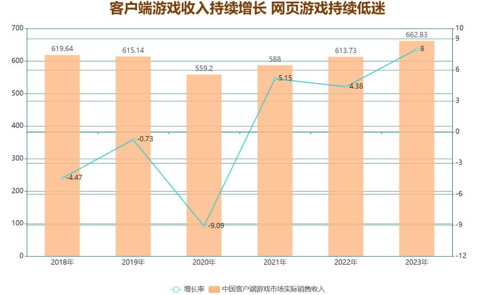
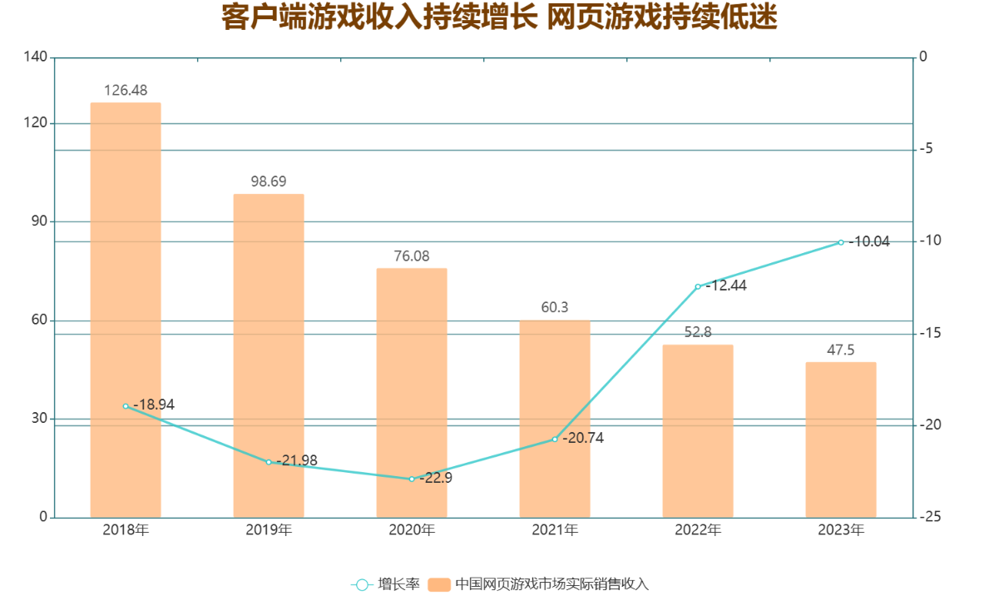
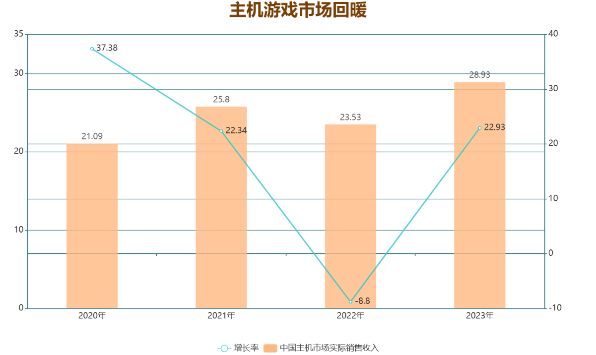
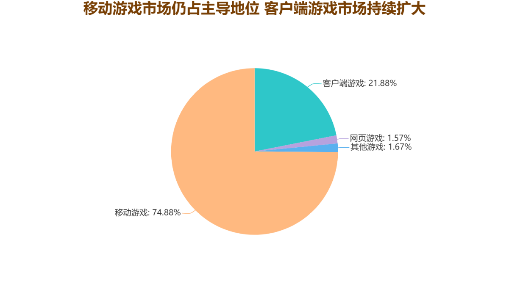

手游VS主机VSPC游戏
在2023年，中国的移动游戏市场经历了前所未有的增长，销售收入达到了2,268.60亿元，较2022年增长了338.02亿元，实现了17.51%的同比增长率。这一年度的表现不仅标志着移动游戏市场的稳健增长，而且也刷新了历史纪录，再次证明移动游戏在中国游戏产业中的强大动力和不断扩大的市场吸引力。这样的增长反映出移动游戏平台的日益完善、游戏内容的丰富多样化以及用户体验的持续优化，共同推动了市场规模的扩大。
此外，随着智能手机用户基数的扩大和移动互联网技术的不断进步，移动游戏为越来越多的用户提供了便捷、互动的娱乐方式，成为人们日常生活中不可或缺的一部分。这一轮收入的飞跃增长，不仅为移动游戏开发商带来了巨大的经济利益，也为整个游戏行业的未来发展趋势和策略规划提供了宝贵的数据和洞察。
在2023年，中国客户端游戏市场的实际销售收入达到了662.83亿元，相比于去年，实现了8.00%的同比增长。这一增长的背后得益于几个关键因素的共同作用。首先，大型多人在线角色扮演游戏（MMORPG）这一领域保持了其收入的稳定性，这类游戏以其丰富的游戏情节、社交互动功能以及持续的内容更新，吸引着庞大的用户群体。此外，头部的电子竞技（电竞）游戏和深受喜爱的二次元游戏也呈现出收入的持续增长，这反映出这些领域的高参与度以及强大的市场吸引力。 更进一步地，市场增长也得益于更多游戏新品的推出以及它们在PC端的同步发行，这一策略不仅扩大了游戏本身的接触面，也为客户端游戏市场带来了新的增长点。这种多元化的发行策略，结合了新游戏的创新吸引力和传统PC端的稳定用户基础，共同推动了客户端游戏整体收入水平的提升。
这个增长趋势清楚地表明，尽管移动游戏市场的迅速崛起，客户端游戏凭借其独特的游戏深度、广泛的游戏类型和沉浸式的游戏体验，仍然保持着其在市场上的重要地位。此外，随着技术的进步和游戏质量的持续提升，预计客户端游戏市场将继续吸引着那些寻求深度游戏体验的玩家，保持其稳定的增长势头。
相对而言，在2023年，中国网页游戏市场的销售收入报告显示，收入为47.50亿元，与去年相比下降了10.04%。这一下降趋势不是孤立的现象，而是自2016年起，网页游戏市场销售收入连续第八年出现下跌，标志着这一市场领域的持续萎缩和需求减少。这种持续的下滑反映出了网页游戏市场面临的多重挑战，包括玩家偏好的转变、移动游戏和客户端游戏的竞争压力日益增加，以及技术进步对游戏形式和平台的影响。
网页游戏市场的下降也揭示了消费者对更高质量、更加沉浸式和交互性更强的游戏体验的追求，这些需求往往通过其他平台的游戏更容易被满足。随着智能手机和PC客户端游戏的不断优化和发展，以及这些平台上游戏内容的日益丰富，网页游戏在吸引和保持玩家方面遇到了越来越大的困难。此外，技术的进步也使得玩家更倾向于下载应用或客户端，而非在浏览器中直接玩游戏，这进一步加剧了网页游戏市场的收缩。
在2023年，中国主机游戏市场取得了显著的成长，实际销售收入达到了28.93亿元，相较于去年，销售业绩实现了22.93%的惊人同比增长。这一增长率不仅显著高于全球主机游戏市场的平均增长水平，也突显了中国市场在全球主机游戏行业中的加速发展与日益重要的地位。
这种增长的背后，一方面得益于中国消费者对主机游戏品质和深度游戏体验需求的增加，另一方面也反映出随着政策的放宽和市场的开放，越来越多的主机游戏和游戏机平台得以进入中国市场，提供了更多的选择给中国玩家。同时，国内外游戏开发商为中国市场量身定制的高质量游戏作品，以及现有游戏的本地化改良工作，也有效地促进了市场的扩张和收入的增长。
在2023年的中国游戏市场中，移动游戏领域的表现尤为突出，其实际销售收入占据了市场总收入的近四分之三，具体比例达到了74.88%。这一比例不仅凸显了移动游戏在中国游戏市场中的主导地位，也反映出了消费者对于移动游戏的高度偏好和对移动设备游戏体验的依赖。
相比之下，客户端游戏虽然在市场份额上仅占21.88%，但这一数据仍显示了客户端游戏在游戏市场中的重要地位和稳定的消费基础。客户端游戏以其优质的画质、深度的游戏内容和沉浸式的游戏体验吸引着一大批忠诚玩家，尤其是在大型多人在线角色扮演游戏（MMORPG）和电子竞技游戏领域，客户端游戏仍旧展现出强大的生命力和吸引力。
而网页游戏市场份额则缩减至1.57%，这一比例很小，但即使持续的下滑反映出了网页游戏市场面临的多重挑战，网页游戏遇到了越来越大的困难，但依然体现了网页游戏在特定用户群体中的市场存量和应用场景。
而被其他游戏包括在内的主机游戏，即使只有1.67%，但仍然可见主机游戏有着足够的市场存量，其有着高于手机和约为PC中高配置的设备，随着大众对主机游戏的认知加深，可预期主机游戏市场将保持反复上升的趋势。